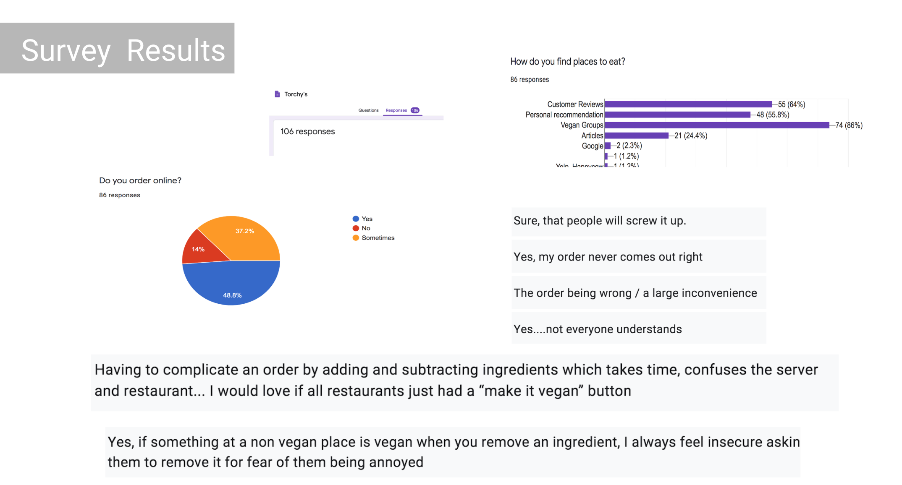
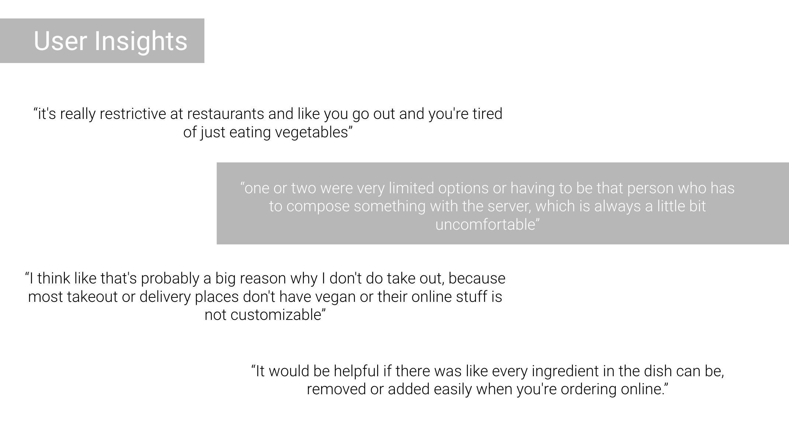
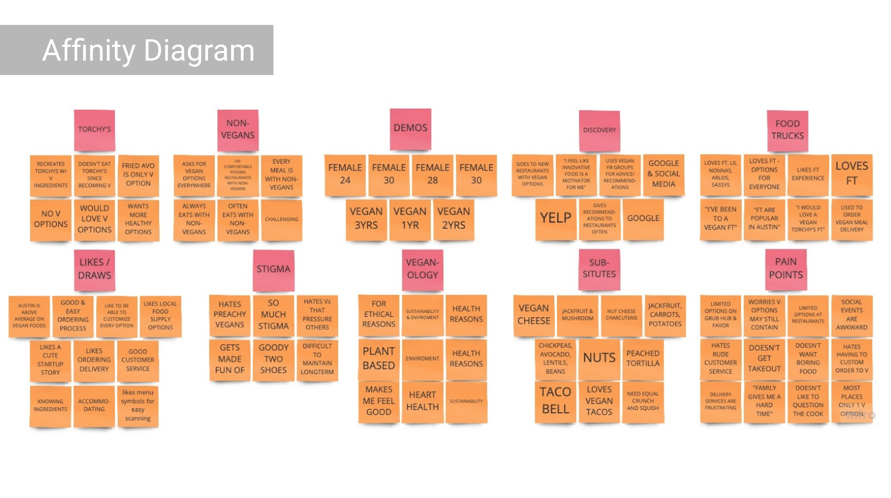

Brief: Create an e-commerce micro site for Torchy’s brand.
Problem: When looking over the Torchy’s website, we noticed they didn’t have vegan options, so we thought it would be a great idea to create an all plant-based menu to order online for the vegan community.
Goal: Writing something here.
Interview Stakeholder.
Stakeholder goals: To reach a new market that will be profitable for the business and fits within the Torchy’s brand. Create a seamless checkout process. Start with a small menu.
Survey’s were posted to several Vegan Group pages online. 108 survey responses received. 
6 user interviews were conducted.
From all our data, this is what we found:
A majority of our respondents are female.
Vegans eat out often with non-vegans.
They rely heavily on group reviews to find places to eat.
They would like to see more vegan options at restaurants with customization on orders.

We then took our survey and interview responses and mapped it out into an affinity diagram to better analyze our research. 
Empathy map
After doing a User Persona: Jenny Love.
Storyboard and Scenario
SWOT
Business Structure
Flows
Wireframing
A/B testing & User insights
Style guide & Mood board
Accessibility Testing
Hi-fi Mobile Prototype:
Designed Mobile First
Similar feel to Torchy’s site, but different look.
Peach background- stakeholders responded positively.
Iterations- nav updates, homepage testing, version A/B.
Future Plans